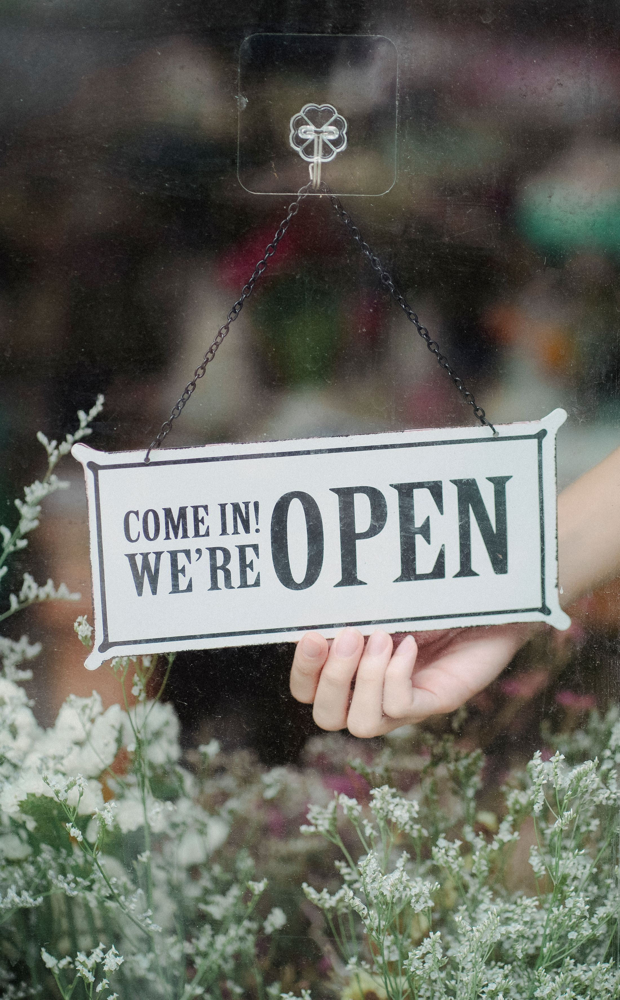
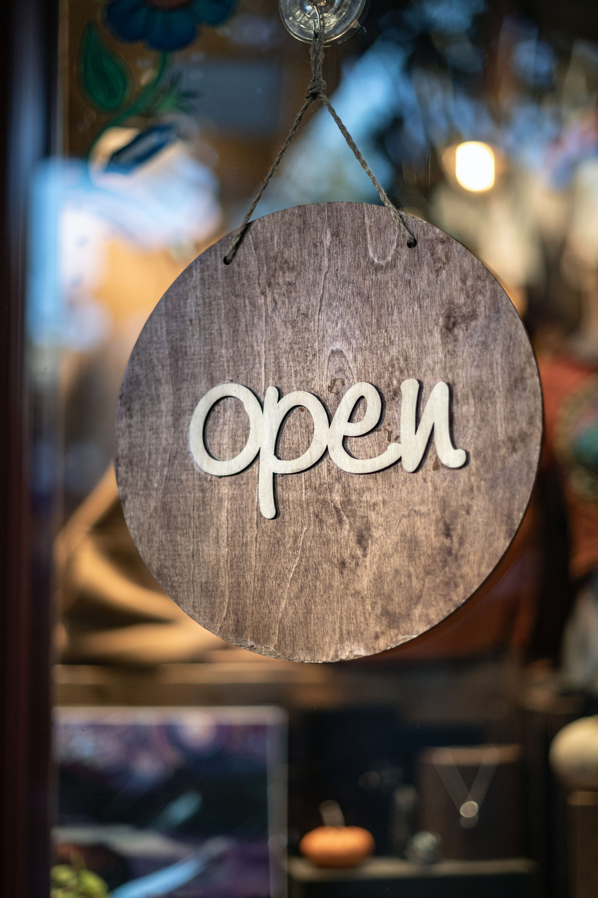
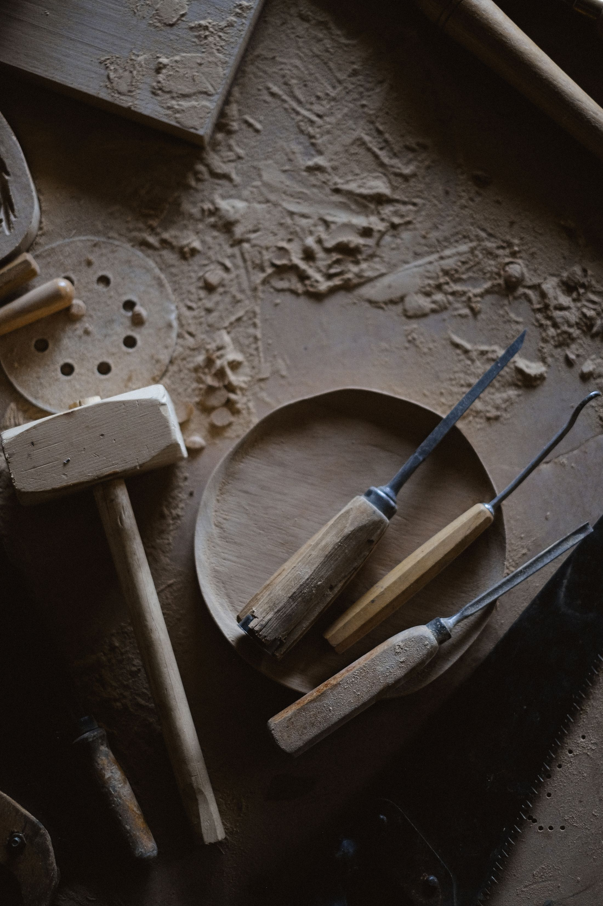
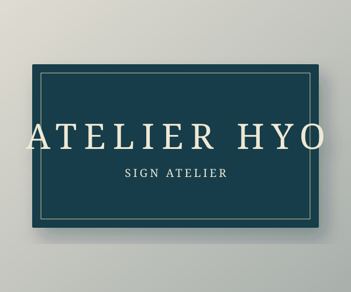
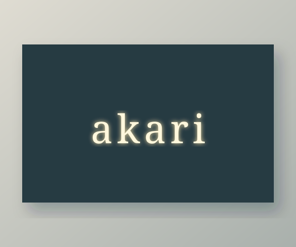
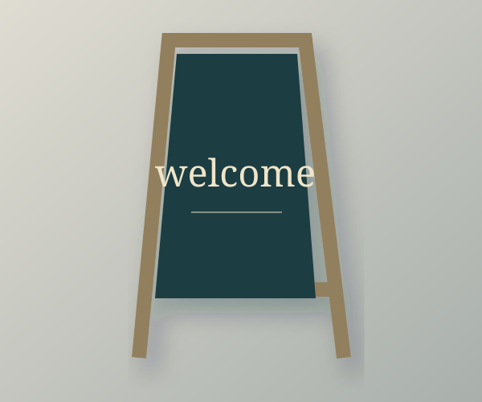
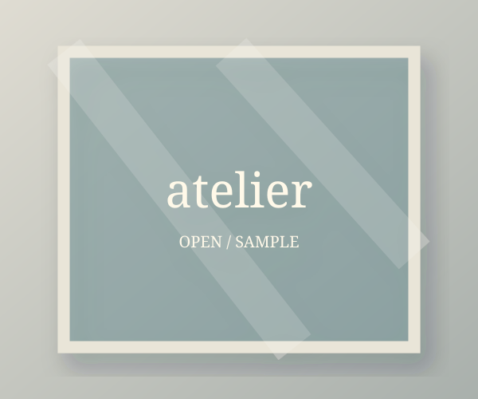
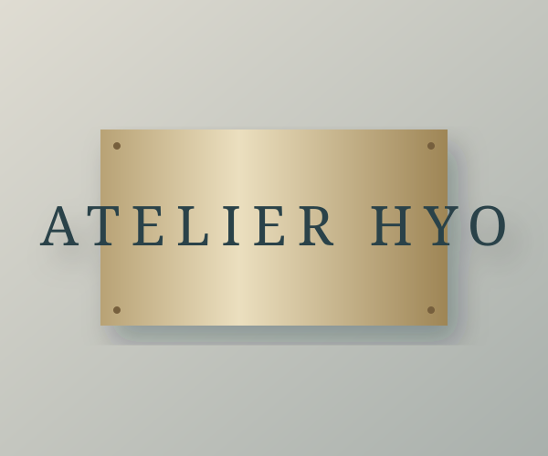

まちに、想いを。
ひとつの看板から

想いを、
かたちに。



Crafting signs, connecting people.
看板製作の架空デザインサンプル
想いを、
かたちに。
ふと目にとまり、足を運びたくなる。
看板は、その場所と人が出会うきっかけです。
文字のかたち、素材の手ざわり、光のあたり方。
遠くからの見え方も、近づいたときの表情も。
ひとつずつ確かめ、その場所らしいしるしを考えます。

さりげなく、印象に残る。
素材から考える、看板。
（質感まで、伝える）木のぬくもり、金属の落ち着き。文字を載せるだけでなく、場所になじむ表情を選ぶ。アトリエ標が考える、ものづくりの入口です。
伝えたい想いに、ふさわしいしるしを。
お店らしさを、最初の一歩に。素材と文字の組み合わせから考える壁面サイン。

→02 / Illuminated letters昼の表情も、夜の見え方も。空間に合わせたやわらかな光のしるし。

→03 / Wayfinding目的の場所へ、迷わずに。読む順番と見つけやすさを整える案内サイン。
 →04 / Stand sign
→04 / Stand sign入口のそばで、今日を伝える。距離感や置く場所に合わせたスタンドサイン。

→05 / Window graphicsガラス越しの景色になじむ、文字と図形。視線の高さから考える窓のサイン。

→06 / Nameplate小さくても、きちんと伝わる。木や金属の表情を生かす、入口の一枚。

→ご相談のご案内
所在地：サンプル表示（架空）
TEL：XXX-XXXX-XXXX
架空の企業情報を使用したデザインサンプルです。
相談・見積り・送信は受け付けていません。